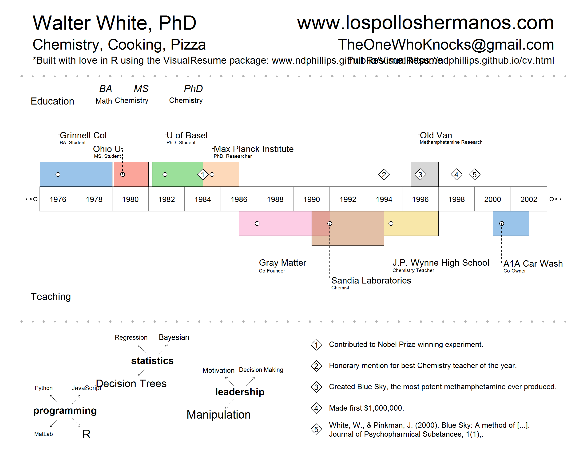

The VisualResume package contains the VisualResume.R function which produces a Visual resume like the one below:

You can install VisualResume from GitHub as follows:
#install.packages("devtools") # Only if you don't have the devtools package
devtools::install_github("ndphillips/VisualResume")To create a Visual Resume, you need to include several arguments that specify the content, size and location of the labels. The function will automatically format the resume to fit your specifications. Here are the main arguments:
titles.left, titles.right: Character vectors (length 3) indicating the header labels.titles.right.cex, titles.left.cex: Numeric vectors (length 3) indicating the size of the header labels.timeline.labels: Character vector (length 2) indicating labels for the top and bottom of the timelinetimeline: A dataframe with columns title, sub, start, end, side. The title and sub columns are vectors, start and end are integers, and side is binary (0 = bottom, 1 = top).milestones: A dataframe with columns title, sub, year.events: A dataframe with columns title, year.interests: A list of character vectors specifying interests. The more often an interest occurs in a vector, the larger it will be displayed.For example, here are the inputs that created Walter White’s Visual Resume above:
VisualResume::VisualResume(
titles.left = c("Walter White, PhD", "Chemistry, Cooking, Pizza", "*Built with love in R using the VisualResume package: www.ndphillips.github.io/VisualResume"),
titles.right = c("www.lospolloshermanos.com", "TheOneWhoKnocks@gmail.com", "Full Resume: https://ndphillips.github.io/cv.html"),
timeline.labels = c("Education", "Teaching"),
timeline = data.frame(title = c("Grinnell Col", "Ohio U", "U of Basel", "Max Planck Institute", "Old Van", "Gray Matter", "Sandia Laboratories", "J.P. Wynne High School", "A1A Car Wash"),
sub = c("BA. Student", "MS. Student", "PhD. Student", "PhD. Researcher", "Methamphetamine Research", "Co-Founder", "Chemist", "Chemistry Teacher", "Co-Owner"),
start = c(1976, 1980.1, 1982.2, 1985, 1996.5, 1987, 1991, 1995, 2001),
end = c(1980, 1982, 1985, 1987, 1998, 1992, 1995, 1998, 2003),
side = c(1, 1, 1, 1, 1, 0, 0, 0, 0)),
milestones = data.frame(title = c("BA", "MS", "PhD"),
sub = c("Math", "Chemistry", "Chemistry"),
year = c(1980, 1982, 1985)),
events = data.frame(year = c(1985, 1995, 1997, 1999, 2000),
title = c("Contributed to Nobel Prize winning experiment.",
"Honorary mention for best Chemistry teacher of the year.",
"Created Blue Sky, the most potent methamphetamine ever produced.",
"Made first $1,000,000.",
"White, W., & Pinkman, J. (2000). Blue Sky: A method of [...].\nJournal of Psychopharmical Substances, 1(1),.")),
interests = list("programming" = c(rep("R", 10), rep("Python", 1), rep("JavaScript", 2), "MatLab"),
"statistics" = c(rep("Decision Trees", 10), rep("Bayesian", 5), rep("Regression", 3)),
"leadership" = c(rep("Motivation", 10), rep("Decision Making", 5), rep("Manipulation", 30))),
year.steps = 2
)If a plot does not come out the way you want it to, you can specify some plotting parameters in the timeline dataframe by including the columns box.x0, box.x1, box.y1, box.y2, which control the locations of the boxes, point.x, point.y which control the locations of the points, and label.x, label.y, label.dir which specify the locations and direction of the labels.
You can also specify colors (and their transparencies) with col and trans.
See the help menu for VisualResume for additional details.
This package is very young and likely contains many bugs and room for improvement. Please submit bug reports and feature requests at https://github.com/ndphillips/VisualResume/issues. Pull requests are also very welcome!